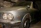

Vignale Market
Vignale Market
A historical archive of classified ads for Gamines, Gamine parts and other Vignale cars — mostly from 1997–2000. Kept as-is, as a record of the hunt.
The ‘Vignale Market’ is a place where you can find Gamines, Gamine parts and other Vignale cars for sale. If you want to advertise your own Vignale-related ad, please mail us, or send it to:
Virtual Vignale Gamine Club
PO Box 10071
3004 AB Rotterdam
Netherlands

Parts for sale
Original Vignale 850 & 1500 Coupe parts — please visit Paul Van der Straeten’s site for more details: geocities.com/MotorCity/Flats/4553/Parts.html (archived link, may no longer be live)
Original sales literature — FIAT (500), 1969, ‘Vignale – Fiat Gamine’: 2 pieces, 8×12. Front is a frontal-view photograph of an orange car, with three inset photographs of the convertible. Reverse side has discussion and specifications. British. (#B6840) $30.
McLellan’s Automotive History · 9111 Longstaff Drive, Houston, TX 77031-2711 · Ph: +1 713 772 3285 · Fax: +1 713 772 3287 · mclellansautomotive.com
‘Gamine’ stickers, set for left and right, copied from the original. Price: 200 French Francs + 20FF shipping. Obtainable from CLUB FIAT 500 et Dérivées.
Vignales for sale
1967 Vignale Fiat 1500 Coupe — complete, but in need of full restoration. Garaged during last years.
Bert van Bienen — Airole (IM), Italy · berto@vanbienen.net
Vignale 125 Samantha — Meryn · Meryn@connectfree.co.uk
Vignale Gamine — Mr Baronian, France · phone +33 (0)4 96 10 63 16
Red Vignale Gamine — Mr Chenu, France · phone +33 (0)1 39 70 85 62
Vignale Fiat 1500 Coupe (Argentina) — “I have a Vignale Fiat 1500 coupe Argentine, and I am looking for people interested in it. My car is an excellent model and is very well. I am careful with it!!! I use it every day and I think it must be used and not put into the garage!!! People must see it in the street and know it!!!!”
Juan Manuel Miramontes — Argentina · fitito1@starmedia.com
Fiat 600 D Vignale Coupe — “Fiat 600 D (100 D) Vignale Coupe, telaio 1400152, anno di prima immatricolazione 1963, targa VI 7…9, colore blu notte, fondi nuovi, meccanica a posto. Volante in legno originale Nardi, marmitta nuova con due terminali cromati tipo Abarth. Pompa acqua e radiatore nuovi. Eventualmente n°5 cerchi in lega Mille Miglia 5″x12″. Prezzo lire 8.000.000 (ottomilioni) trattabili.” (original Italian ad)
Email: Rocca Stephan
Austrian Gamine for sale — Red Vignale Gamine, year 1968, completely restored, registered in Austria.
Phone +43 5357 4175 · Fax +43 5357 4176 · SumoneAustria@compuserve.com
Italian Gamine for sale — “Fiat Spyder Vignale (GAMINE) ’68 bianca, ruote a raggi, ben conservata, vendesi.” (original Italian ad)
Tel. 051-471123, Bologna · or merz@bellquel.bo.cnr.it3
Greek Gamine for sale — White Gamine, initial colour orange, first circulation in Greece possibly 1968.
Costas Marsellos · phone +30 1 8944 581 or mobile +30 93 724 724 · marsel@ath.forthnet.gr
German Gamine for sale — red, restored, top condition, spare parts.
Phone +49 7223 8511
Danish Gamine for sale — from 1968, only two owners, driven 85,000 km, the only one in Denmark. Very good condition, red with black top and interior.
Lotte Nymand-Andersen · lotte@sirius.dk · mobile +45 40 15 52 40
Fiat 500 Gamine — rare 1972 convertible in bright red. Only 30,208 miles. Bare-metal restoration by previous owner (photos). Excellent runner. Email for more information.
Colours: red and yellow (Noddy colors). Year: 1971. Phone (car dealer) +44 (0)181 501 2727.
Gamine Vignale — colour MATTONE, date of first registration 01-04-71.
Email: expoauto@sicap.it · WWW: ExpoAuto
Red Gamine — Mr/Mrs Radicini, phone +39 175 977 503 (Italy). Make offer by mail to: Borgata Sprit, 12020 Frassino (CN), Italy.
‘Noddy car’ — “We last featured a Fiat Gamine in the July 1991 issue, and they are really quite rare little cars. Bernard Hologate of Basildon spotted this one in a local scrapyard, and reports that the proprietor would prefer to sell it complete for restoration, rather than break it up for the value of the spare parts. Although wearing a 1978 London registration plate, this merely indicates its date of importation into the UK — it’s a left-hand-drive model. It looks complete and pretty rust-free, but has suffered front-end accident damage and minor abrasions elsewhere. It’s well worth saving, however, and the yard proprietor would welcome calls from those interested – but no time wasters please.”
Ring Dave on +44 (0)268 533706
Vignales wanted
Looking for a 1500 Vignale and an 850 Vignale for restoration purposes, as I have a large amount of body panels. I already possess a 124S Vignale and a 600 Vignalina.
Paul Van der Straeten — Belgium
“Cerco 500 Gamine, qualsiasi condizione a prezzo ragionevole.” (original Italian ad) — email: m.sorice@ragionieri.com
Parts wanted
Vignale logos for a Lancia Appia — nichelsen@xtra.co.nz
Vignale logos, on sides & back — sns@aeolos.com
Wanted for a Gamine: grille + interior for grille, interior mirror, glove-compartment lid, small side windows, headlights, right-side door, front shock absorbers.
Jean-Jacques de Galkowsky · phone +33 1 42 65 33 73 · fax +33 1 42 66 97 81 · or email the Virtual Vignale Gamine Club